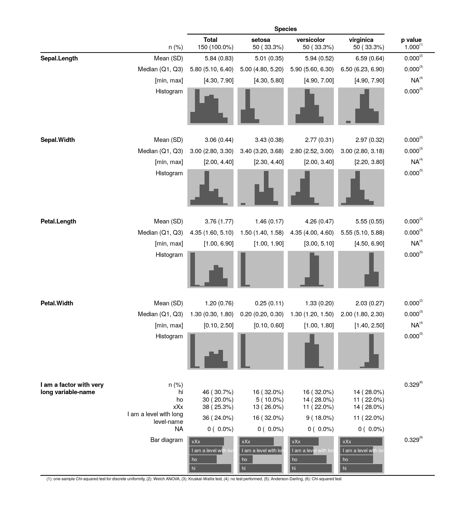

describr.Rmd# create dataset with dummy factor
iris %>%
mutate(
`I am a factor with very long variable-name` = factor(
sample(1:4, nrow(iris), replace = TRUE),
labels = c("hi", "ho", "xXx", "I am a level with long level-name")
)
) ->
df_iris_test# describe data frame
df_iris_test %>%
describr(
by = Species,
pvalues = TRUE,
theme_new = theme_default(text_size = 7) # unit: pt
) %>%
describe_if(
is.numeric,
with = list(
dscr_mean_sd(),
dscr_median_q1_q3(),
dscr_min_max(),
dscr_histogram()
)
) %>%
describe_if(
is.factor,
with = list(dscr_freq(), dscr_factor_barchart())
) 